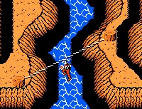

Grappling Hook
Once you have this item you can press Up and B at any time to launch a grappling hook
straight into the air. If it strikes a ceiling (even one that's not visible on the screen)
it will catch and hold, allowing you to climb up and hang from it. When standing on a ledge
you can press down and B to descend. |
Wind Pulley
With this item you can cross chasms that are spanned by ropes. In side-view mode simply
walk off the ledge by one end of the rope and the pulley will catch on. In overhead-view mode
walk around by one end of the rope; when you hear a "click" sound the pulley is attached and
you can cross. |
Crossbow
Use this item to shoot a rope across chasms with posts on either side. You can then use
the pulley to cross. Stand next to one of the poles and press B to fire the crossbow. |
Coat of Arms
Before you have this item some hermits will ask you if you have the Coat of Arms. Once you
have it these same hermits will give you a potion to completely refill your HP at any time. |
Armor
Increases your defensive power, but it's not especially effective. |
Potion
Once you have this item simply highlight it in the submenu and press B to completely refill
your HP at any time. It's only good for one use but you can get another at any time. |
Pegasus Flute
This can only be used at one place in the game. Once you have all the items, if you play it
at the right location, you'll be given access to the final stage. |
| In the first area you can back yourself up against a wall, duck, and start pounding away at
the B button to get some easy Mind points and experience. If you have a turbofire controller you
can let it do all the work for you while you go grab a snack. |
| The Power Up spell only costs 3 Mind points and its effect is permanent (until you're killed), so
cast it as soon as you have the necessary points. |
| Attack and Assail is pretty much a waste of your time. Save your Mind points for the Recover
spell. |
| Partly thanks to sloppy programming, you can jump up in overhead view mode and hit enemies
that are actually behind you, without any risk of being hurt yourself. |
| Can't advance? Maybe there's a platform on the screen above or below you. Toss the grappling
hook up to see if it catches anything or lower yourself down if you can. |
| Try to get to bosses with full Mind points and a healing potion if you can. Wait until your
HP is low and then use the healing potion, and then wait for your HP to run low again before
using the Recover spell. Budget your strength carefully and you can kill bosses you otherwise
wouldn't be ready to face. |
| One of the best places in the game to get experience quick is in the flying stone islands of
Lapis, and you can get to it as soon as you have the grappling hook. Head as far right as you can
and launch the grappling hook up to climb to the next screen. You'll be attacked by a lone robot.
It'll take many hits to kill but it's worth lots of experience. Then enter the nearby door and when
you exit the robot will be back. Kill it again and repeat the process and eventually you'll be
strong enough to finish it it (or anything else) in a single hit. |
| Another excellent place to power up is the Tower of Garba, accessible once you have the
crossbow. The snail near the center of the tower reappears each time you leave the screen and
return. Go off the right side of the screen, come back in, and start pounding the B button (you
may have to take a couple hits before it's dead if you're not strong enough). You can quickly
build up enough strength to take the snail out in one hit, and then even the final boss will
be easy. |
Gran Mountain
Work your way to the right through the first area and into the passes of Gran
Mountain. Explore the different doorways you find here, and eventually you'll find a passage to
a valley in Garloz. |
|
Garloz
This is an overhead-view area. Head north, then west through the opening in the cliff.
Then go due north and take the right-hand path (shown at right). This will
lead you to a hermit who will give you the Grappling Hook. |
Rolsa Valley
From there head back south to your starting point, and this time
head east. Go north around the upper end of the bay and east through the first opening in the
cliff you reach. Enter the doorway just to the north. This should take you to a wall of stones
alongside a river in the Rolsa Valley. Proceed all the way to the right to find the entrance to
Eruga's Forest. |
Eruga's Forest
Head to the right. When you can't move any farther along the forest floor, try throwing the
grappling hook up above the screen to climb up to the branches above (shown at right). After a while you'll come
upon Eruga's lair. |
|
Eruga
You should have at least 6 full units on your life bar, a powered-up weapon, and
enough Mind points to cast Recover before you enter Eruga's lair. Simply walk up to him and start
pounding away at the B button. Don't even make an effort to dodge the projectiles as that will
waste precious time. Once he's defeated a portal will open and take you to one of the Gods of
Indora, who will give you the Wind Pulley. You'll be returned to Garloz. |
Mt. Primeval
Back in Garloz, head to the southernmost peninsula you can reach on foot. Cross the rope on
the western side of this peninsula (shown at right) and go west. You'll come across the portal to Mt. Primeval,
where flying dragons will attempt to drop eggs on you from above. Head all the way to the right to
discover Sagila's Cave. |

|
Sagila's Cave
Work your way to the right and you'll find your way outside again. Further to the right is another
entrance to the caves. At the ledges set above shafts in the floor you can use your grappling hook
to climb down. Head down to the lowest levels of the caves and you'll find Sagila's web. |
Sagila
He's easy to beat at any level. Simply use the grappling hook to climb all the way up
to the center of the ceiling and attack left or right with your weapon to drive him back when he
approaches. It might take a minute to finish him but if you're careful you won't even be injured.
Your reward is the Crossbow. |
Lapis
Head to the eastern edge of Garloz, past the entrance to Rolsa Valley. You'll find the
entrance to an area where you'll be attacked by more dragons. Past here are the flying islands
of Lapis. Whenever you can't proceed further, try using the grappling hook to climb up or down to
find the next island. The crossbow will allow you to pass chasms with no rope stretched across
them. Eventually you'll find your way to Belzar. |
Belzar
You'll want at least 8 HP before you face him. Climb up right next to him and start
pounding away. Simply jump straight up over his intermittent shots and keep hitting him. When you
beat him you'll be given the Coat of Arms. |
Dorago's Palace
Once back in Garloz cross the rope near the entrance to Mt. Primeval, then
head north and west. Stand just below the log and use the crossbow to reach the palace. The
interior of the palace is a mazelike overhead-view area. It will take time but you shouldn't
have too much trouble finding your way to Dorago. |
Dorago
Be sure to have a healing potion before you face him. Stand below and to the side of
him and start jumping and hitting him. Try to stay in one place and he should be easily beaten.
You'll then receive the Armor. |
Tower of Garba
Return to Gran Mountain and climb up near the summit, then head to the right
to find the tower. Inside you'll face a series of tough bosses. Your best bet is to use brute
force and have enough Mind for a Recover spell as well as a healing potion. You'll want at least
9 HP before you try this place. The reward for beating the dragon at the top is the Pegasus
Flute. |
Sky Castle
Go back to Rolsa Valley and find the hermit who says you'll need the grappling
hook. Use the hook to scale the tower he resides in (shown at right). Once you have all the treasures you can can
blow the flute at the top of this tower to open the entrance to Ligar's castle in the sky. Fight
your way through its mazelike interior to challenge the final boss. |
 |
Ligar
You're in for a rough time if you face him with anything less than the full 12 HP. You
can try to play carefully and dodge his bullets, but this can be difficult. If you can get to him
with your Mind points and potion intact, then it's better to just go crazy and keep hitting him
in the head, and he should be dead before your HP runs out. Congratulations! Sit back and enjoy
your hard-earned ending. |